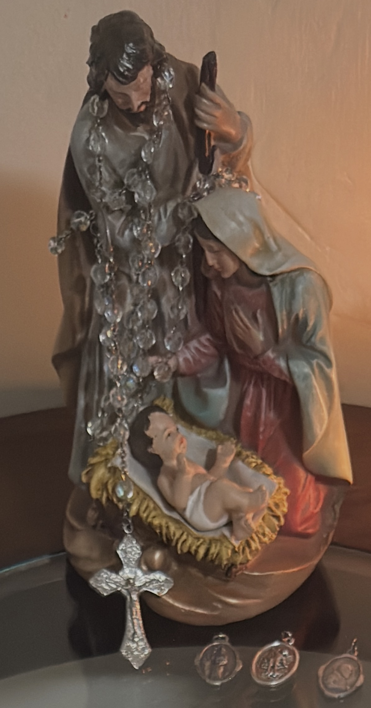

Si estás leyendo esto, probablemente sientes que algo se rompió, se detuvo o se desvió.
Quizá fue un proyecto.
Quizá una relación.
Quizá una etapa de tu vida.
O quizá simplemente sientes que te alejaste de ti misma,
de lo que querías ser, o de Dios.
No importa cuál sea la razón.
Este encuentro no está hecho para analizar el pasado. Está hecho para acompañarte en el momento en que decides que todavía es posible comenzar de nuevo.
Hay algo que quiero que sepas desde el principio.
Volver a empezar no es fingir que nada pasó. Tampoco es borrar lo que duele. Es mirar lo que quedó y decidir, con humildad y con esperanza, dar el siguiente paso.
Y para eso no necesitas tener todo claro.
Solo necesitas estar dispuesta a comenzar.
Te envié un rosario. No era un regalo cualquiera. En la cajita iba una frase que decía más o menos esto:
Ahora quiero que te acompañe en los tuyos.»
Ese rosario ya recorrió un camino. Ahora quiere recorrer otro: el tuyo.

El rosario, sobre la Sagrada Familia.
No te lo di porque creyera que tenías que rezar perfectamente. Te lo di porque sé que hay días en los que uno no sabe por dónde empezar… y entonces basta con tomar las cuentas y decir la primera Avemaría.
A veces volver a empezar es tan sencillo como eso:
tomar el rosario y comenzar la primera cuenta.
En 1917, en un pequeño pueblo de Portugal llamado Fátima, la Virgen se apareció a tres niños pastores: Lucía, Francisco y Jacinta.
No les habló de cosas complicadas. Les pidió algo muy concreto:
convertirse,
y ofrecer sacrificios por la paz del mundo
y por la conversión de los pecadores.
Les mostró que el mundo podía volver a empezar. Que las personas podían volver a empezar. Que incluso quienes se habían alejado mucho podían regresar.
La Virgen de Fátima no les dijo: «Es demasiado tarde.»
«Todavía es posible.»
Ese es el corazón de este encuentro.
No importa cuánto tiempo haya pasado. No importa cuántas veces hayas intentado y te hayas detenido. No importa si sientes que ya no sabes cómo regresar.
Siempre se puede volver a empezar.
Y muchas veces el primer paso es tan pequeño como tomar un rosario y rezar una decena.
No tienes que rezar el rosario completo hoy. No tienes que sentir nada especial. No tienes que estar en un estado de gracia perfecto. Solo tienes que estar dispuesta a comenzar.
Toma el rosario que te envié. Haz la señal de la cruz. Y reza, aunque sea, una sola Avemaría.
Eso ya es un comienzo.
Después, si quieres, puedes seguir. Si no puedes seguir, está bien. Mañana puedes volver a intentar.
El rosario no te exige perfección. Solo te acompaña.
La Virgen de Fátima sigue siendo hoy la misma que se apareció a aquellos niños: la Madre que no se cansa de esperar el regreso de sus hijos.
Ella no mira cuántas veces fallaste. Mira si estás dispuesta a volver a empezar.
Y el rosario que tienes en tus manos es una forma concreta de decirle:
«Aquí estoy. Quiero intentar otra vez.»
Oración
Señora de Fátima,
Madre que no te cansas de llamar,
hoy quiero volver a empezar.
No sé si lo haré perfectamente.
No sé si me mantendré firme.
Pero quiero dar el primer paso.
Toma este rosario que ahora está en mis manos
y acompáñame,
como acompañaste a Lucía, a Francisco y a Jacinta.
Enséñame a confiar otra vez.
Enséñame a rezar aunque no sepa qué decir.
Enséñame a comenzar,
aunque sea con una sola Avemaría.
Y cuando vuelva a caer,
recuérdame que siempre puedo volver a empezar.
Amén.
Ahora, si puedes, toma el rosario.
No hace falta que sea largo.
Solo comienza.
No hace falta saberlas de memoria desde el primer día. Aquí están para que puedas comenzar.
El Padrenuestro
santificado sea tu Nombre;
venga a nosotros tu reino;
hágase tu voluntad en la tierra como en el cielo.
Danos hoy nuestro pan de cada día;
perdona nuestras ofensas,
como también nosotros perdonamos
a los que nos ofenden;
no nos dejes caer en la tentación,
y líbranos del mal. Amén.
El Avemaría
llena eres de gracia;
el Señor es contigo.
Bendita tú eres entre todas las mujeres,
y bendito es el fruto de tu vientre, Jesús.
Santa María, Madre de Dios,
ruega por nosotros, pecadores,
ahora y en la hora de nuestra muerte. Amén.